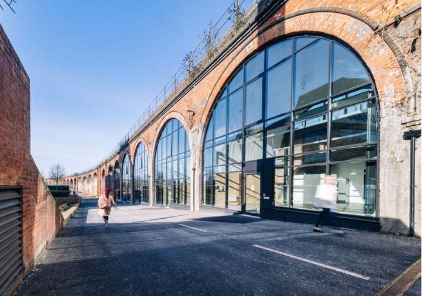
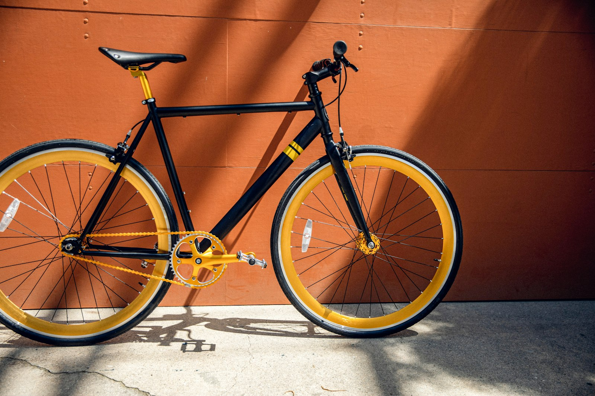

Visit
Arch 9, Wenlow Viaduct
9of 14 arches
Arch 9, Wenlow Viaduct, Tanner Street, Wenlow. Ninth arch from the station end, glazed front, yellow door.
- Monday to Friday
- 08:00–18:00
- Saturday
- 09:00–16:00
- Sunday
- Closed
workshop@dishwell.example · 01632 960 418
Walking
From Wenlow station
300m
- Leave by exit B, Tanner Street.
- Turn left under the first arch and follow the viaduct.
- Arch 9 is on your right after 300 m, past the bakery in Arch 6.
Step-free from the platform by the lift at exit B.

Drop-off
Dropping off
10:00latest
- Bring the bike before 10:00 on your booked day.
- Take off lights, bags and computers. We are not responsible for them.
- We tag the bike, take your number and text a quote by 14:00.
- We text again when it is ready. You have 14 days to collect.
8 Sheffield stands outside Arch 8 for your other bike.
